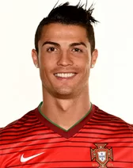

DEGREE/MAJOR
Escola Básica e Secundária (1991-1997)
DEGREE/MAJOR
Sporting Youth Academy (1997-2002)
Tactical Intelligence
Explosive Speed
Elite Finishing
Knuckleball Technique
Physical Endurance
THE GOAT
Cristiano Ronaldo was born on February 5, 1985, on the island of Madeira, Portugal, and is one of the most famous and successful football players in history. His talent for football was noticed at a young age, leading him to join Sporting Lisbon's academy, where he quickly stood out. In 2003, he transferred to Manchester United and stepped onto the world stage, gaining recognition with league titles and a UEFA Champions League victory. He later moved to Real Madrid, reaching the peak of his career, breaking numerous goal records and winning multiple Ballon d'Or awards. After playing for Juventus and returning to Manchester United, Ronaldo now continues his career in Saudi Arabia. Known for his discipline, physical strength, and work ethic, he has become an inspiration to millions not only because of his achievements but also his determination and ambition.
Leading the attacking line for the Saudi Pro League team, contributing significantly to the team's goal-scoring record and global brand presence.